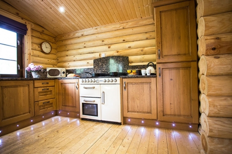

Important Information
Please take a few moments to read through some important information.

Introduction
Felmoor Park is a small development of luxury log cabins and static caravans set around a small lake in the heart of Northumberland. Gingerbread Cabin is situated in a quiet lakeside corner of the park.Pre Arrival
- Bookings and enquiries can be made by email or by contacting Andy or Khadine Edwards on messenger through facebook We are located on the A1 near Felton, Morpeth.
- A car is recommended to fully enjoy the surrounding area.
- Nearest town is Alnwick which is situated 8 miles away. This has a range of shops including a supermarket, chemist, bank, newsagent, bakery and delicatessen.
- Alnwick is also home to Alnwick Castle (made famous for being the castle in the Harry Potter films)
- Nearest railway station is Morpeth (7 miles) where trains run to many destinations throughout the country.
- Nearest bus stop is at Felton (2 miles).
- Bus routes run to Morpeth, Alnwick and beyond.
- Private transport can be provided from Felmoor Park, please ask the owners for details.
- Taxis are available locally and the owners can make necessary bookings.
- The nearest Shopmobility Scheme is in Newcastle Upon Tyne (21 miles).
- The nearest RADAR toilet is in Amble. (toilets for disabled guests are located in the reception on site)
- Short term loan of medical equipment such as wheelchairs, walking frames etc is available from British Red Cross.
- The nearest centre is located in Morpeth (7 miles).
Arrival and car parking facilities
- The area around reception has parking for many cars
- The road surface around the lodges is primarily tarmac
- There is a 1 car parking area to the rear of the cabin itself.
- If you would like to bring an additional car, this can be parked at the main reception car park
- 1 Week prior to arrival, please contact us with your car registration as a number plate scanning barrier is in place
Main entrance and reception area
- To access the main reception area, there is a small step leading onto a decked area. Within the reception area, the floor is tiled and carpeted.
- Car parking is available immediately outside the reception area.
Entrance and access to Gingerbread cabin
- Access to the front of the cabin leading from the tarmac parking area is by way of a level access pathway leading around the side of the cabin, to the front.
- This path leads onto the decked area at the front of the cabin, please take care as this may be slippery when wet.
- Gingerbread cabin is wheelchair accessible and all doors have been enlarged to accommodate this.
- Access to the cabin is over a small thresh of around two inches in height. Once inside the cabin, all areas are on the same level.
Bedrooms
- The master bedroom has a king size bed (5 foot) the other two bedrooms are twin rooms and they have two single beds (3 foot) in each.
- Ceiling mounted spotlights light the cabin throughout. The bedrooms also have bedside lamps
- Each bedroom has a wooden floor as it's floor surface.
Bathroom
- The bathroom has a standard height toilet and washbasin
- Walk in hydro shower cubicle with rainforest shower head, standard and multi jet shower heads.
- The bathroom has a wooden floor surface.
- Lighting in the bathroom is overhead.
- There is also a heated towel rail.
Kitchen Area (self catering)
- Open plan with standard size appliances.
- The kitchen has a fridge and separate freezer, LPG hob and LPG range oven, microwave, kettle etc. Worktops and splashbacks are black granite.
- The kitchen has a wooden floor surface.
- Lighting in the kitchen is overhead.
Additional Information
- Gingerbread Cabin has its name displayed on the exterior of the building.
- The approach decking area outside has a slight ramp suitable for wheelchair use.
- The outside paths around the cabin can be slippery in wet weather.
- The cabin is strictly no smoking
- Mobile telephone reception is reasonable in the area although networks do vary.
- Cleaning of the cabin is carried out with Eco Friendly products where possible.
- The log cabin has LPG heating with radiators and an electric stove‐style fire in the lounge.
- Smoke and carbon monoxide detectors are located in the living room area.
- Fire extinguishers and fire blankets are provided in the log cabin.
For hygiene reasons, the water in the hot tub is fully drained and the hot tub receives a full clean before each stay. Please allow time for the hot tub to reach it's full temperature if it has not already done so by the time you arrive.
- Alnwick Infirmary:0844 8118111
- Police (non emergency):03456 043043